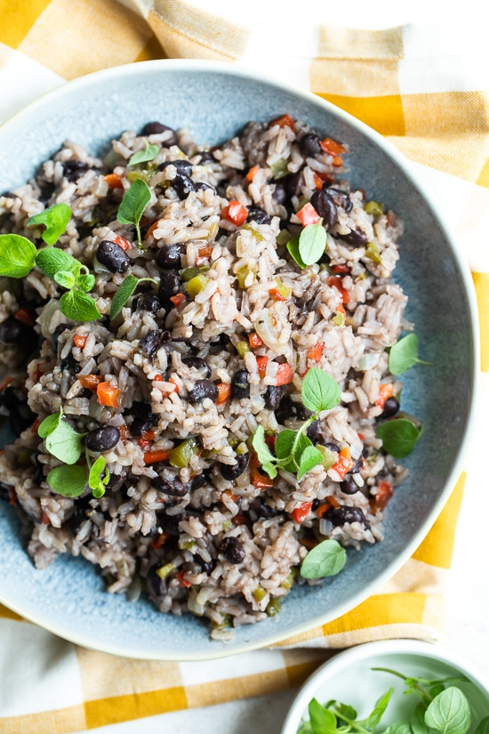

Arroz Congri

Rice and black beans cook together, which gives the rice its black color. Peppers, onions, garlic, cumin, and bay leaf give this dish so much flavor. Not only is arroz congri delicious, but it's also high in fiber, protein, and antioxidants, low in fat, vegan, and gluten-free. Win, win!
Indredients
- 2 tsp olive oil
- 1/2 cup chopped green bell pepper
- 1/2 cup chopped red bell pepper
- small chopped onion
- 2 minced cloves garlic
- 1 cup uncooked long grain rice
- 15 oz can black beans
- 1 1/2 cups water
- 1/2 tsp cumin
- 1 bay leaf
- pinch oregano
- salt and pepper to taste
Steps
- In a heavy medium sized pot, heat oil on medium heat.
- Add onions, peppers and garlic and saute until soft, about 4-5 minutes.
- Add rice, beans, water, cumin, bay leaf, oregano and salt and pepper. Simmer on medium-low heat, stirring occasionally, until the rice absorbs most of the water and just barely skims the top of the rice.
- Cover, reduce heat to low, and simmer 20 minute (don't peek).
- Make sure you have a good seal on your cover, the steam cooks the rice. After 20 minutes, shut flame off and let it sit, covered another 5 minutes (don't open the lid).